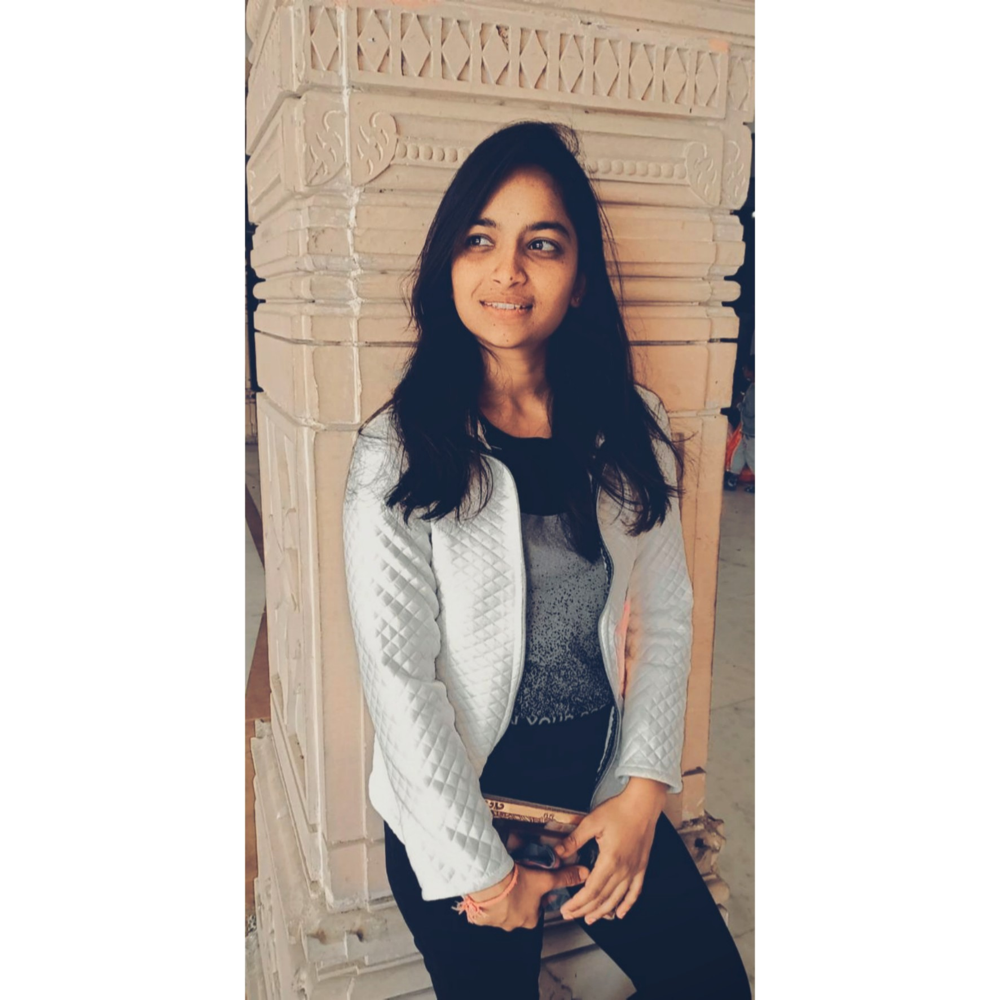

my name is vandana patidar, i'm from neemuch,madhya pradesh.
I belong to a nuclear family.
My strength is hardworking and desciplined person.
My short term goal is get a job in well reputed company.
My long term goal is to achieve a good position when i can build my career and help the organization too.

Education
I have done my graduation in bsc(cs),from govt. college of neemuch, of vikram university, ujjain
Now i'm pursuing MCA from MANIT,Bhopal.
Theory classes
| no. | Subject |
| 1 | Descrete Mathematics Previous Knowledge:Our Syllabus covers the major part of Discrete Mathematics, which includes Mathematical Logic, Boolean Algebra, Set Theory, Relations, Functions, Group Theory etc. Discrete means unconnected so through all this topics we are going to learn to our programmming languages are indirectly connected with Mathematical Logic. This logic is used to determine the link between computer in a network and to determine a valid internet address. Expectation:This subject is taught by "Dr. Madhvi Shakya Mam". The topics which was included in this subject is already covered in our graduation level, but here we are studying it in deep, for knowledge purpose. |
| 2 | Data Structure Previous Knowledge:In Data Structure we are are learning the basis, how we can store data in our memory through various data storing methods likes through Arrays, Linked List, Stack, Queue, Trees and Graphs. Initially I am aware about arrays ,linked list , stack, queue and trees but on a basic level. Here we are learning much more about this concept. The most interesting topic I found was linked list and stack, queue. Expectation:This subject was taught by "Prof. Amit Bhagat". The topics which was included in this subject is already covered in our graduation level, but here I am expecting deep knowledge of every single topic. |
| 3 | Operating system Previous Knowledge:I have learned about Operating System earlier but only at very basic level, But now our syllabus cover the major parts about Operating System like Process Scheduling, Process Synchronization ,DeadLock Handling, Memory Management, File system etc. Here we are are going to learn how actually the operating system works pratically by its booting process and by bootloader concept. Expectation:This subject is taught by "Prof. Vishnu Priya Mam". The topics which was included in this subject is already covered in our graduation level, but here we are getting some practical knowledge about it. |
| 4 | C-Language Previous Knowledge:This is the first programming language we are learning from our graduation, but it always seems we need to learn more in it. I have learn almost every topic of C language during my graduation, here I am learning so many new concepts ,this helps me to improve my existing skills in C language. Through theory wise it seems to be little but it is very vast topic ,because this language is the base of all the other coding languages. Expectation: This subject is taught by "Prof. Anirban Chowdhury". The topics which was included in this subject is already covered in our graduation level, here our teacher taught the topics by explaining various variation in a particular thing, so that helpful to clear our concepts more. |
| 5 | Computer Architecture Previous Knowledge:This subject covers major part of organization and Architecture of computer which includes Memory Management,Microprocessor, Logic Circuits,Registers etc. Here we are learning diffrent types of storing tools which are required to store the data and their functionality.And also we are learning about different types of microprocessor and their working procedure. Expectation:This subject is taught by "Prof. Anoop K. Tiwari". The topics which was included in this subject is already covered in our graduation level, but here I am expecting some deep knowledge about it. |
| 6 | Business Communication Previous Knowledge:This subject is really interesting, here we are learning the how to communicate effectively. Their are various things which are responsible for our communication like not only our words but the way we talk , our appearance , our gesture, posture voice modulation are equally important for a healthy Communication. Here we are learning different techniques to develop our personality and also our faulty gives us task to fluorish our existing skills. Expectation:This subject is taught by "Prof. Anjuli Jain Mam". The topics which was included in this subject is already covered in our graduation level, here we are trying to improve communication skills through task. |
| no. | subjest |
| 1 | Web Development Lab Previous Knowledge:This subject brings so much practical knowledge, where we are learning how to create a web page using html, css, javascript etc. Here we are learning how we can made a webpage attractive by adding different font family, font size, set the background color , to insert an image , to give link to the other pages etc. I found it a interesting class through here, I get chance to learn soo much about designing a web page. Expectation:This subject is taught by "Prof. Anirban Chowdhury". The topics which was included in this subject is already covered in our graduation level, but here I am expecting to learn more about it, by practising and applying different variations in it. This is really going interesting. |
| 2 | C-Programming Lab Previous Knowledge:We are also having a theory clases of this subject, so to implement it pratically become more efficent for us. Here we are polishing our existing skills of C language, by coding practise. Every week we are assigned to do a new task, which helps us to make our concepts more strong. Expectation:This subject is taught by "Prof. Anoop K. Tiwari". The topics which was included in this subject is already covered in our graduation level, but practical knowledge is very necessary in this subject so, here we are developing our concepts. |
| no. | Hobbies |
| 1 | Listening Music |
| 2 | Playing games |
| 3 | singing |
{kind=link}